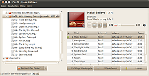

Decibel Audio Player
Dieser Artikel wurde für die folgenden Ubuntu-Versionen getestet:
Ubuntu 14.04 Trusty Tahr
Zum Verständnis dieses Artikels sind folgende Seiten hilfreich:
Decibel Audio Player  ist eine minimalistische Anwendung, welche alle notwendigen Funktionen eines Audio-Players mitbringt. Es ist ein in Python geschriebener Fork von Bluemindo – speziell für die GNOME-Desktopumgebung.
ist eine minimalistische Anwendung, welche alle notwendigen Funktionen eines Audio-Players mitbringt. Es ist ein in Python geschriebener Fork von Bluemindo – speziell für die GNOME-Desktopumgebung.
Der Audio-Player bietet:
Anzeige von Audiodateien in Baumstruktur
Wiedergabelisten
Drag und Drop bei der Bedienung

Installation¶
Für die Installation [1] wird folgendes Paket benötigt :
decibel-audio-player (universe)
 mit apturl
mit apturl
Paketliste zum Kopieren:
sudo apt-get install decibel-audio-player
sudo aptitude install decibel-audio-player
Nach erfolgreicher Installation kann das Programm decibel-audio-player gestartet werden [2].
Bedienung¶
Das Hauptfenster ist zweigeteilt. Auf der linken Seite ist der Dateimanager zu finden, über welchen man die wiederzugebenden Ordner und Dateien ansteuert. Diese werden per Drag&Drop in die rechte Fensterseite gezogen. Über die Schaltflächen wird die Wiedergabe gesteuert. Über einen  Rechtsklick in der jeweiligen Fensterhälfte erreicht man separate Menüs. Einige Funktionen müssen aktiviert werden, bevor man sie nutzen kann.
Rechtsklick in der jeweiligen Fensterhälfte erreicht man separate Menüs. Einige Funktionen müssen aktiviert werden, bevor man sie nutzen kann.
Wiedergabeliste¶
Um Wiedergabelisten zu verwenden, führt man in der rechten Fensterhälfte einen Rechtsklick aus. Hier können die Dateien verwaltet und anschließend die Wiedergabeliste, im Format m3u, abgespeichert werden.
Konfiguration¶
Das Einstellungsmenü ist generell über "Bearbeiten -> Einstellungen" zu erreichen. Dort ist die jeweilige Erweiterung zu aktivieren, indem man ein Häkchen setzt. Einige Erweiterungen können über "Einstellungen" an die eigenen Bedürfnisse angepasst werden. Über "Mode" kann das Aussehen des Players verändert werden.
| Erweiterungen | |
| Erweiterung | Beschreibung |
| "Audio-CD" | CDDB nutzen und Pfad zum Laufwerk festlegen |
| "AudioScrobbler" | Last.fm nutzen |
| "Cover" | Cover aus Verzeichnissen anzeigen lassen oder ggf. von Last.fm herunterladen |
| "Dateimanager" | In der Grundkonfiguration wird lediglich auf das Homeverzeichnis zugegriffen. Um weitere Verzeichnisse zu verwenden, diese über  hinzufügen. hinzufügen. |
| "Instant Messenger Status" | Wiedergegebenes Stück in Pidgin anzeigen lassen |
| "Statussymbol" | Tray-Icon anzeigen lassen |
Statussymbol¶
Die Steuerung des Audio-Players geschieht mit den Maustasten. Ein  Linksklick auf das -Icon öffnet bzw. schließt das Hauptfenster. Über einen Rechtsklick erreicht man die wichtigsten Steuerelemente des Programms.
Linksklick auf das -Icon öffnet bzw. schließt das Hauptfenster. Über einen Rechtsklick erreicht man die wichtigsten Steuerelemente des Programms.
Tastenkürzel¶
| Decibel Audio Player | |
| Taste(n) | Funktion |
| Strg + P | Einstellungen |
| F9 | Dateimanager ein/ausblenden |
| Strg + Q | Programm beenden |

 Übersichtsartikel
Übersichtsartikel- Erstellt mit Inyoka
-
 2004 – 2017 ubuntuusers.de • Einige Rechte vorbehalten
2004 – 2017 ubuntuusers.de • Einige Rechte vorbehalten
Lizenz • Kontakt • Datenschutz • Impressum • Serverstatus -
Serverhousing gespendet von